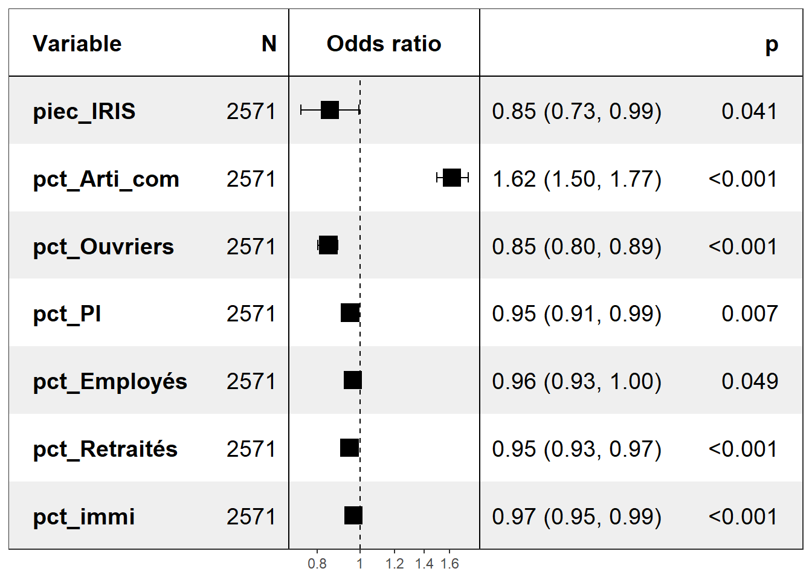
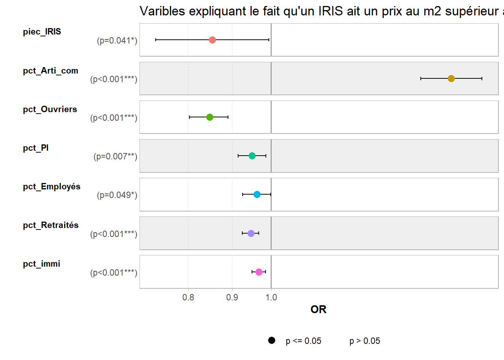
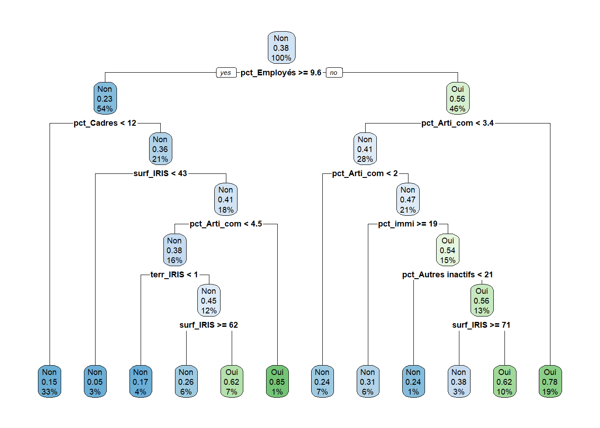
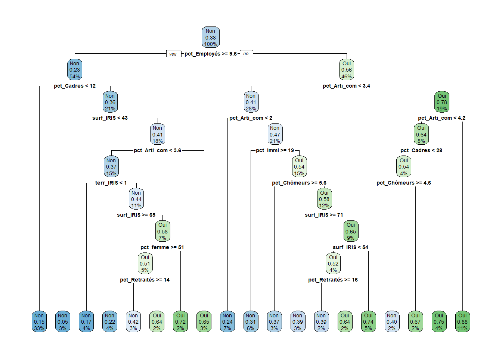

# Chargement des librairies
library(tidyverse)
library(janitor)
library(gt)
# Chargement des tables
RP_final <- readRDS(file = "data/RP_final.Rdata")
mapdvf <- readRDS("data/mapdvf.RDS")
# Appel fonctions
source("fonctions/fonctions.R")13 Modèles de régression : application sur le RP 2019 (ou sur la base dvf)
On cherche maintenant à expliquer un phénomène ou une variable par rapport à d’autres. On va ici s’intéresser au prix moyen de vente d’un bien (appartement ou maison) sur une zone IRIS et ce qui peut expliquer que ce prix moyen sur un IRIS donné est supérieur à la moyenne du département.
13.1 La création des bases d’apprentissage et de test
On crée notre base de travail en ne prenant que les variables qui nous intéressent et le champ le plus pertinent pour cette analyse. La fonction relevel() permet d’indiquer la modalité de référence que l’on veut dans les régressions futures, ici pour la régression logistique.
## Prépa table RP niveau IRIS
# On re-crée notre variable socio-professionnelle précédente et on re-code certaines variables
prepa_tab_RP <- RP_final %>%
mutate(CS_empcho = as.factor(case_when(CS1 == "2" & TACT=="11" ~ "Arti_com",
CS1 == "3" & TACT=="11" ~ "Cadres",
CS1 == "4" & TACT=="11" ~ "PI",
CS1 == "5" & TACT=="11" ~ "Employés",
CS1 == "6" & TACT=="11" ~ "Ouvriers",
TACT=="12" ~ "Chômeurs",
CS1 == "7" & TACT=="21" ~ "Retraités",
TRUE ~ "Autres inactifs")),
sexe = as.factor(case_when(SEXE == "1" ~ "homme", TRUE ~ "femme")),
immigres = as.factor(case_when(IMMI=="1" ~"immi", TRUE ~ "pas-immi")))
# On crée le tableau de contingence au niveau IRIS
tab_RP_IRIS_0 <- prepa_tab_RP %>%
tab_cont_n(IRIS, CS_empcho, nom_var=cat_soc, var=CS_empcho, prefix_var="pct_") %>%
adorn_percentages() %>% mutate(across(where(is.numeric), ~ round(.x * 100, 1)))
tab_RP_IRIS_1 <- prepa_tab_RP %>%
tab_cont_n(IRIS, sexe, nom_var=sexe1, var=sexe, prefix_var="pct_") %>%
adorn_percentages() %>% mutate(across(where(is.numeric), ~ round(.x * 100, 1)))
tab_RP_IRIS_2 <- prepa_tab_RP %>%
tab_cont_n(IRIS, immigres, nom_var=immigres1, var=immigres, prefix_var="pct_") %>%
adorn_percentages() %>% mutate(across(where(is.numeric), ~ round(.x * 100, 1)))
# Merge des 3 tables
list_tab <- list(tab_RP_IRIS_0, tab_RP_IRIS_1, tab_RP_IRIS_2)
tab_RP_IRIS <- list_tab %>%
reduce(left_join, by = "IRIS")
rm(tab_RP_IRIS_0, tab_RP_IRIS_1, tab_RP_IRIS_2, prepa_tab_RP, list_tab)
## Prépa table DVF niveau IRIS et variables autres à créer
prepa_tab_dvf_1 <- mapdvf %>%
rename(IRIS = iris_code) %>%
select(-geometry) %>%
group_by(IRIS) %>%
summarise(prixm2_IRIS = round(mean(prixm2)),
prix_IRIS = round(mean(prix)),
surf_IRIS = round(mean(surf)),
piec_IRIS = round(mean(piec)),
terr_IRIS = round(mean(terr))) %>%
ungroup() %>%
mutate(dep_code = substr(IRIS, 1, 2))
prepa_tab_dvf_2 <- mapdvf %>%
select(-geometry) %>%
group_by(dep_code) %>%
summarise(prix_dep = round(mean(prix)),
prixm2_dep = round(mean(prixm2))) %>%
ungroup()
tab_dvf_IRIS <- prepa_tab_dvf_1 %>%
left_join(prepa_tab_dvf_2, by = "dep_code") %>%
mutate(prixm2_sup = as.factor(case_when(prixm2_IRIS > prixm2_dep ~ "Oui", TRUE ~ "Non")),
prixm2_sup = relevel(prixm2_sup, ref="Non")) %>% # dans les modèles on voudra modaliser le fait que ce prix soit supérieur
select(-c(prix_dep, prixm2_dep))
rm(prepa_tab_dvf_1, prepa_tab_dvf_2)
## Jointure des 2 tables
tab_final_reg <- tab_dvf_IRIS %>% left_join(tab_RP_IRIS) # moins de communes présentes dans la table DVF donc ici on part de cette table pour éviter d'avoir des IRIS manquantes côté DVF
rm(tab_RP_IRIS, tab_dvf_IRIS)De manière traditionnelle, dans les modèles de prédiction ou machine learning, on applique pas le modèle sur l’ensemble de la base de données mais d’abord sur un échantillon dit d’apprentissage puis on le “teste” sur l’échantillon restant. On va donc ici suivre ce schéma et diviser notre base de données en deux pour avoir un échantillon d’apprentissage ou d’entraînement, et un autre test. On utilise pour cela la fonction sample (mais d’autres fonctions existent) en lui spécifiant la façon de diviser la base avec l’argument prob= : ici on choisit de diviser notre base selon un rapport 70% vs 30%, autrement dit notre base d’apprentissage comprendra 70% des données de la base initiale, alors que la base de test comprendra les 30% restants. On pourrait procéder à un rapport du type 80% vs 20%, ou 75% vs 25%, etc.
# Pour que ce soit à chaque fois les mêmes échantillons (tirage aléatoire identique), pour que le commentaire dans le texte corresponde bien au résultat de la sortie
set.seed(123)
# On choisit la façon de diviser notre base et on l'applique en créant 2 bases
sample <- sample(c(TRUE, FALSE), nrow(tab_final_reg), replace=TRUE,
prob=c(0.70,0.3))
dt_reg_train <- tab_final_reg[sample, ]
dt_reg_test <- tab_final_reg[!sample, ]
# On regarde quelle est la taille de nos deux bases
dim(dt_reg_train)[1] 1809 20dim(dt_reg_test)[1] 762 20# On vérifie que les proportions de notre variable d'intérêt sont assez proches
# entre les deux bases
dt_reg_train %>% tabyl(prixm2_sup) %>% adorn_pct_formatting() %>%
adorn_totals("row") %>% gt()| prixm2_sup | n | percent |
|---|---|---|
| Non | 1118 | 61.8% |
| Oui | 691 | 38.2% |
| Total | 1809 | - |
dt_reg_test %>% tabyl(prixm2_sup) %>% adorn_pct_formatting() %>%
adorn_totals("row") %>% gt()| prixm2_sup | n | percent |
|---|---|---|
| Non | 482 | 63.3% |
| Oui | 280 | 36.7% |
| Total | 762 | - |
Les deux bases présentent une répartition prixm2 moyen de l’IRIS supérieur ou non à celui du département très proche : environ 37-38% des IRIS connaissent un prix au m2 moyen supérieur à celui de leur département.
13.2 Un modèle à visée principale explicative : la régression logistique
La fonction glm du package stats (à installer avant appel dans la librarie) est principalement utilisée pour modéliser différents types de régression : l’argument family=binomial("logit") permet d’utiliser un modèle logit.
# install.packages("stats")
library(stats)13.2.1 Le modèle initial
On crée le modèle en spécifiant la variable d’intérêt puis les variables explicatives ou l’ensemble des variables présentes dans la base si nous avons déjà procédé à une sélection des variables : c’est le cas ici donc c’est pour cela que l’on indique juste un “.” après le “~”, sinon on devrait écrire les variables une par une, ou les sctoker dans une liste et appeler la liste.
Même si ce type modèle doit permettre essentiellement d’expliquer un phénomène, ici être en couple par rapport à ne pas l’être, on peut l’utiliser aussi pour prédire les données. C’est pourquoi nous appliquons d’abord le logit sur la base (réduite) d’apprentissage.
# terr_IRIS nous permet d'avoir une info sur le fait que la vente est un appartement ou une maison, en plus ça permet d'introduire aussi une hétérogénité entre les maisons (selon taille du terrain)
# pct_Cadres : on l'enlève, considéré comme référence
logit_1 <- glm (prixm2_sup ~ surf_IRIS + piec_IRIS + terr_IRIS + pct_Arti_com +
`pct_Autres inactifs` + pct_Chômeurs + pct_Employés +
pct_Ouvriers + pct_PI + pct_Retraités + pct_femme + pct_immi ,
data = dt_reg_train,
family = binomial("logit"))
summary(logit_1)
Call:
glm(formula = prixm2_sup ~ surf_IRIS + piec_IRIS + terr_IRIS +
pct_Arti_com + `pct_Autres inactifs` + pct_Chômeurs + pct_Employés +
pct_Ouvriers + pct_PI + pct_Retraités + pct_femme + pct_immi,
family = binomial("logit"), data = dt_reg_train)
Coefficients:
Estimate Std. Error z value Pr(>|z|)
(Intercept) 3.1588303 1.3874016 2.277 0.022798 *
surf_IRIS 0.0112440 0.0071117 1.581 0.113864
piec_IRIS -0.2948255 0.1617440 -1.823 0.068335 .
terr_IRIS -0.0006748 0.0008299 -0.813 0.416161
pct_Arti_com 0.4576162 0.0547970 8.351 < 2e-16 ***
`pct_Autres inactifs` -0.0116628 0.0137436 -0.849 0.396107
pct_Chômeurs 0.0467399 0.0378126 1.236 0.216424
pct_Employés -0.0331774 0.0235068 -1.411 0.158127
pct_Ouvriers -0.1382897 0.0311114 -4.445 8.79e-06 ***
pct_PI -0.0584572 0.0270096 -2.164 0.030440 *
pct_Retraités -0.0491846 0.0165954 -2.964 0.003039 **
pct_femme -0.0277918 0.0222010 -1.252 0.210633
pct_immi -0.0412766 0.0114351 -3.610 0.000307 ***
---
Signif. codes: 0 '***' 0.001 '**' 0.01 '*' 0.05 '.' 0.1 ' ' 1
(Dispersion parameter for binomial family taken to be 1)
Null deviance: 2406.1 on 1808 degrees of freedom
Residual deviance: 1977.3 on 1796 degrees of freedom
AIC: 2003.3
Number of Fisher Scoring iterations: 4Toutes les variables sont significatives.
On va donc l’appliquer maintenant à la base test, en créant des indicateurs mesurant le taux de prédiction ou au contraire d’erreur.
Le modèle predict permet d’abord d’abord de calculer la probabilité d’être en couple pour chaque individu, l’argument type="response" permettant d’appliquer le modèle logistique. Il est plus intéressant d’avoir la probabilité d’une variable de type qualitative, “oui”/“non” comme la variable d’intérêt du modèle, il faut donc procéder à une transformation aboutissant à une nouvelle variable (on considère alors que si la probabilité est strictement supérieure à 0.50 alors cela équivaut à une modalité “oui”). Enfin, on crée une matrice de confusion qui est en réalité un tableau croisé entre les valeurs observées et les prédicitions du modèle ; et on calcule un taux d’erreur en rapportant la somme des éléments hors diagonale principale à la somme des observations totales (de la matrice donc).
# Modèle de prédiction pour récupérer les probabilités individuelles d'être en couple
pred.proba <- predict(logit_1, newdata = dt_reg_test, type="response")
# On transforme les probas en variable qualitative
pred.moda <- factor(case_when(pred.proba>0.5 ~ "oui", TRUE ~ "non"))
# On crée la matrice de confusion
matrice_conf <- table(dt_reg_test$prixm2_sup, pred.moda)
matrice_conf pred.moda
non oui
Non 415 67
Oui 134 146# On calcule le taux d'erreur
tx_erreur <- (matrice_conf[2,1]+matrice_conf[1,2])/sum(matrice_conf) * 100
tx_erreur [1] 26.37795On voit que parmi la modalité observée “non” de la base de données, le modèle prédit 415 ‘non’ soit environ 54% de cette modalité, c’est la majorité mais tout juste. Le taux d’erreur d’environ 26% montre quand même que le modèle prédit pas hyper bien mais pas trop mal non plus (on pourrait avoir bien plus !).
Une autre façon de faire est après les deux premières étapes réécrites ici, d’ajouter la variable de prédiction à la table initiale est de créer une nouvelle variable qui indique si on a bien une correspondance entre les modalités des deux variables : l’initiale et celle prédite. Cela nous donne donc le taux d’erreur calculé au-dessus, on retrouve bien 26% de correspondances inexactes.
# Modèle de prédiction pour récupérer les probabilités individuelles d'être un IRIS avec un prixm2 supérieur à celui de son département
#pred.proba <- predict(logit_1, newdata = dt_reg_test, type="response")
# On transforme les probas en variable qualitative
#pred.moda <- factor(case_when(pred.proba>0.5 ~ "oui", TRUE ~ "non"))
# On ajoute la variable de prédiction dans la table test initiale
dt_reg_test_bis <- cbind.data.frame(dt_reg_test, var_predict=pred.moda)
# et on crée une variable indiquant ou non la correspondance entre
# les modalités des deux variables
dt_reg_test_bis %>%
mutate(predict_OK=as.factor(case_when(prixm2_sup=="Oui" & var_predict=="oui" ~ "oui",
prixm2_sup=="Non" & var_predict=="non" ~ "oui",
TRUE ~ "non"))) %>%
tabyl(predict_OK) %>% adorn_pct_formatting() %>% adorn_totals("row") predict_OK n percent
non 201 26.4%
oui 561 73.6%
Total 762 -
13.2.2 L’évaluation du modèle et la recherche éventuelle d’un “meilleur” modèle
On peut améliorer le modèle en recherchant celui qui est le “meilleur” en faisant une sélection sur les variables, plus précisément en demandant au modèle de choisir les variables les plus explicatives, car peut-être que certaines ne sont pas nécessaires à l’explication du modèle (dans notre cas, nous avons néanmoins vu que toutes les variables étaient significatives donc a priori utiles dans le modèle).
Pour une sélection “pas à pas”, il faut utiliser le package MASS et la fonction stepAIC car c’est à travers le critère AIC (“Akaike Information Criterion”,) que le modèle va chercher à être “meilleur” : plus il sera faible, meilleur il sera. On va d’abord faire cette sélection de façon “descendante” c’est-à-dire en partant du modèle initial “logit_1” ici : on part du modèle avec l’ensemble des variables et on en supprime une au fur et à mesure pour voir si le modèle est “meilleur”.
# install.packages("MASS)
library(MASS)
logit_backward <- stepAIC(logit_1,
scope=list(lower="prixm2_sup ~ 1",
upper="prixm2_sup ~ surf_IRIS + piec_IRIS + terr_IRIS + pct_Arti_com +
`pct_Autres inactifs` + pct_Chômeurs + pct_Employés +
pct_Ouvriers + pct_PI + pct_Retraités + pct_femme + pct_immi"),
direction="backward")Start: AIC=2003.29
prixm2_sup ~ surf_IRIS + piec_IRIS + terr_IRIS + pct_Arti_com +
`pct_Autres inactifs` + pct_Chômeurs + pct_Employés + pct_Ouvriers +
pct_PI + pct_Retraités + pct_femme + pct_immi
Df Deviance AIC
- `pct_Autres inactifs` 1 1978.0 2002.0
- terr_IRIS 1 1978.1 2002.1
- pct_Chômeurs 1 1978.8 2002.8
- pct_femme 1 1978.8 2002.8
<none> 1977.3 2003.3
- pct_Employés 1 1979.3 2003.3
- surf_IRIS 1 1979.8 2003.8
- piec_IRIS 1 1980.6 2004.6
- pct_PI 1 1982.0 2006.0
- pct_Retraités 1 1986.2 2010.2
- pct_immi 1 1990.5 2014.5
- pct_Ouvriers 1 1994.7 2018.7
- pct_Arti_com 1 2054.6 2078.6
Step: AIC=2002
prixm2_sup ~ surf_IRIS + piec_IRIS + terr_IRIS + pct_Arti_com +
pct_Chômeurs + pct_Employés + pct_Ouvriers + pct_PI + pct_Retraités +
pct_femme + pct_immi
Df Deviance AIC
- terr_IRIS 1 1979.0 2001.0
- pct_femme 1 1979.8 2001.8
- pct_Chômeurs 1 1979.8 2001.8
<none> 1978.0 2002.0
- surf_IRIS 1 1980.2 2002.2
- pct_Employés 1 1980.3 2002.3
- piec_IRIS 1 1981.9 2003.9
- pct_PI 1 1982.1 2004.1
- pct_Retraités 1 1986.7 2008.7
- pct_immi 1 1992.9 2014.9
- pct_Ouvriers 1 1996.9 2018.9
- pct_Arti_com 1 2068.1 2090.1
Step: AIC=2001.03
prixm2_sup ~ surf_IRIS + piec_IRIS + pct_Arti_com + pct_Chômeurs +
pct_Employés + pct_Ouvriers + pct_PI + pct_Retraités +
pct_femme + pct_immi
Df Deviance AIC
- pct_femme 1 1980.6 2000.6
- surf_IRIS 1 1980.7 2000.7
- pct_Chômeurs 1 1980.7 2000.7
<none> 1979.0 2001.0
- pct_Employés 1 1981.2 2001.2
- piec_IRIS 1 1983.3 2003.3
- pct_PI 1 1984.0 2004.0
- pct_Retraités 1 1988.4 2008.4
- pct_immi 1 1993.6 2013.6
- pct_Ouvriers 1 2002.3 2022.3
- pct_Arti_com 1 2070.1 2090.1
Step: AIC=2000.62
prixm2_sup ~ surf_IRIS + piec_IRIS + pct_Arti_com + pct_Chômeurs +
pct_Employés + pct_Ouvriers + pct_PI + pct_Retraités +
pct_immi
Df Deviance AIC
- pct_Chômeurs 1 1982.0 2000.0
- surf_IRIS 1 1982.2 2000.2
<none> 1980.6 2000.6
- pct_Employés 1 1983.6 2001.6
- piec_IRIS 1 1984.7 2002.7
- pct_PI 1 1985.0 2003.0
- pct_Retraités 1 1992.9 2010.9
- pct_immi 1 1994.1 2012.1
- pct_Ouvriers 1 2002.3 2020.3
- pct_Arti_com 1 2074.5 2092.5
Step: AIC=2000
prixm2_sup ~ surf_IRIS + piec_IRIS + pct_Arti_com + pct_Employés +
pct_Ouvriers + pct_PI + pct_Retraités + pct_immi
Df Deviance AIC
- surf_IRIS 1 1983.2 1999.2
<none> 1982.0 2000.0
- pct_Employés 1 1984.4 2000.4
- piec_IRIS 1 1986.2 2002.2
- pct_PI 1 1987.1 2003.1
- pct_immi 1 1994.1 2010.1
- pct_Retraités 1 1995.3 2011.3
- pct_Ouvriers 1 2003.0 2019.0
- pct_Arti_com 1 2074.5 2090.5
Step: AIC=1999.18
prixm2_sup ~ piec_IRIS + pct_Arti_com + pct_Employés + pct_Ouvriers +
pct_PI + pct_Retraités + pct_immi
Df Deviance AIC
<none> 1983.2 1999.2
- pct_Employés 1 1985.3 1999.3
- piec_IRIS 1 1987.1 2001.1
- pct_PI 1 1989.4 2003.4
- pct_Retraités 1 1995.4 2009.4
- pct_immi 1 1995.6 2009.6
- pct_Ouvriers 1 2005.3 2019.3
- pct_Arti_com 1 2094.6 2108.6logit_backward
Call: glm(formula = prixm2_sup ~ piec_IRIS + pct_Arti_com + pct_Employés +
pct_Ouvriers + pct_PI + pct_Retraités + pct_immi, family = binomial("logit"),
data = dt_reg_train)
Coefficients:
(Intercept) piec_IRIS pct_Arti_com pct_Employés pct_Ouvriers
1.70775 -0.18210 0.48914 -0.03277 -0.13803
pct_PI pct_Retraités pct_immi
-0.05498 -0.04691 -0.03756
Degrees of Freedom: 1808 Total (i.e. Null); 1801 Residual
Null Deviance: 2406
Residual Deviance: 1983 AIC: 1999La sortie affiche le “meilleur” modèle à la fin, et il faudrait enlever plusieurs variable relatives à la catégorie socio-professionnelle (pct_Autres inactifs, pct_Chômeurs, pct_femme), et les deux variables relatives aux caractéristiques du logement (surf_IRIS, terr_IRIS).
Pour une sélection des variables de façon “ascendante”, en partant d’un modèle sans variable puis on ajoute une à une les variables. On utilise la même fonction mais en changeant les paramètres et en créant un modèle “vide” avant :
logit_0 <- glm(prixm2_sup ~ 1, data=dt_reg_train, family=binomial("logit"))
logit_forward <- stepAIC(logit_0,
scope=list(lower="prixm2_sup ~ 1",
upper="prixm2_sup ~ surf_IRIS + piec_IRIS + terr_IRIS +
pct_Arti_com + `pct_Autres inactifs` + pct_Chômeurs +
pct_Employés + pct_Ouvriers + pct_PI + pct_Retraités +
pct_femme + pct_immi"),
direction="forward")Start: AIC=2408.06
prixm2_sup ~ 1
Df Deviance AIC
+ pct_Arti_com 1 2142.7 2146.7
+ pct_Ouvriers 1 2154.8 2158.8
+ pct_Employés 1 2180.1 2184.1
+ pct_immi 1 2226.5 2230.5
+ `pct_Autres inactifs` 1 2295.1 2299.1
+ pct_Chômeurs 1 2310.1 2314.1
+ terr_IRIS 1 2374.3 2378.3
+ piec_IRIS 1 2393.3 2397.3
+ pct_femme 1 2395.9 2399.9
+ pct_Retraités 1 2396.3 2400.3
+ surf_IRIS 1 2401.6 2405.6
<none> 2406.1 2408.1
+ pct_PI 1 2405.9 2409.9
Step: AIC=2146.71
prixm2_sup ~ pct_Arti_com
Df Deviance AIC
+ pct_Ouvriers 1 2012.8 2018.8
+ pct_immi 1 2049.2 2055.2
+ pct_Employés 1 2057.9 2063.9
+ `pct_Autres inactifs` 1 2096.2 2102.2
+ terr_IRIS 1 2109.6 2115.6
+ pct_Chômeurs 1 2119.9 2125.9
+ piec_IRIS 1 2120.3 2126.3
+ pct_femme 1 2129.4 2135.4
+ surf_IRIS 1 2136.5 2142.5
+ pct_PI 1 2140.1 2146.1
+ pct_Retraités 1 2140.3 2146.3
<none> 2142.7 2146.7
Step: AIC=2018.81
prixm2_sup ~ pct_Arti_com + pct_Ouvriers
Df Deviance AIC
+ pct_Retraités 1 2006.0 2014.0
+ pct_immi 1 2007.4 2015.4
+ pct_Employés 1 2007.4 2015.4
+ piec_IRIS 1 2008.9 2016.9
+ terr_IRIS 1 2010.1 2018.1
+ pct_femme 1 2010.3 2018.3
<none> 2012.8 2018.8
+ surf_IRIS 1 2011.2 2019.2
+ pct_PI 1 2012.0 2020.0
+ pct_Chômeurs 1 2012.2 2020.2
+ `pct_Autres inactifs` 1 2012.7 2020.7
Step: AIC=2013.98
prixm2_sup ~ pct_Arti_com + pct_Ouvriers + pct_Retraités
Df Deviance AIC
+ pct_immi 1 1996.9 2006.9
+ pct_Employés 1 1998.7 2008.7
+ pct_PI 1 2004.0 2014.0
+ piec_IRIS 1 2004.0 2014.0
<none> 2006.0 2014.0
+ `pct_Autres inactifs` 1 2004.9 2014.9
+ terr_IRIS 1 2005.0 2015.0
+ pct_femme 1 2005.2 2015.2
+ surf_IRIS 1 2005.8 2015.8
+ pct_Chômeurs 1 2006.0 2016.0
Step: AIC=2006.88
prixm2_sup ~ pct_Arti_com + pct_Ouvriers + pct_Retraités + pct_immi
Df Deviance AIC
+ pct_PI 1 1990.5 2002.5
+ pct_Employés 1 1992.0 2004.0
+ piec_IRIS 1 1993.1 2005.1
+ terr_IRIS 1 1994.0 2006.0
<none> 1996.9 2006.9
+ pct_Chômeurs 1 1995.0 2007.0
+ pct_femme 1 1995.8 2007.8
+ surf_IRIS 1 1996.2 2008.2
+ `pct_Autres inactifs` 1 1996.6 2008.6
Step: AIC=2002.54
prixm2_sup ~ pct_Arti_com + pct_Ouvriers + pct_Retraités + pct_immi +
pct_PI
Df Deviance AIC
+ piec_IRIS 1 1985.3 1999.3
+ `pct_Autres inactifs` 1 1986.2 2000.2
+ pct_Employés 1 1987.1 2001.1
+ terr_IRIS 1 1988.2 2002.2
<none> 1990.5 2002.5
+ surf_IRIS 1 1988.7 2002.7
+ pct_femme 1 1988.9 2002.9
+ pct_Chômeurs 1 1989.0 2003.0
Step: AIC=1999.29
prixm2_sup ~ pct_Arti_com + pct_Ouvriers + pct_Retraités + pct_immi +
pct_PI + piec_IRIS
Df Deviance AIC
+ pct_Employés 1 1983.2 1999.2
<none> 1985.3 1999.3
+ pct_femme 1 1983.3 1999.3
+ `pct_Autres inactifs` 1 1984.0 2000.0
+ surf_IRIS 1 1984.4 2000.4
+ pct_Chômeurs 1 1984.7 2000.7
+ terr_IRIS 1 1985.0 2001.0
Step: AIC=1999.18
prixm2_sup ~ pct_Arti_com + pct_Ouvriers + pct_Retraités + pct_immi +
pct_PI + piec_IRIS + pct_Employés
Df Deviance AIC
<none> 1983.2 1999.2
+ pct_femme 1 1981.9 1999.9
+ surf_IRIS 1 1982.0 2000.0
+ `pct_Autres inactifs` 1 1982.2 2000.2
+ pct_Chômeurs 1 1982.2 2000.2
+ terr_IRIS 1 1982.9 2000.9logit_forward
Call: glm(formula = prixm2_sup ~ pct_Arti_com + pct_Ouvriers + pct_Retraités +
pct_immi + pct_PI + piec_IRIS + pct_Employés, family = binomial("logit"),
data = dt_reg_train)
Coefficients:
(Intercept) pct_Arti_com pct_Ouvriers pct_Retraités pct_immi
1.70775 0.48914 -0.13803 -0.04691 -0.03756
pct_PI piec_IRIS pct_Employés
-0.05498 -0.18210 -0.03277
Degrees of Freedom: 1808 Total (i.e. Null); 1801 Residual
Null Deviance: 2406
Residual Deviance: 1983 AIC: 1999Le taux d’AIC diminue à chaque variable ajoutée jusqu’au meilleur modèle, qui est le même que dans la précédente procédure : sans plusieurs variable relatives à la catégorie socio-professionnelle, et sans les deux variables relatives aux caractéristiques du logement.
13.2.3 Le modèle final et l’interprétation des résultats
Finalement, dans une visée plus explicative que prédictive, on peut estimer notre modèle sur l’ensemble de la base et étudier plus précisément les résultats avec les odds-ratios ou rapports des côtes par exemple pour commenter plus directement les coefficients. Ces odds-ratios correspondent à l’exponentiel des coefficients initiaux de la régression. Ils se lisent par rapport à 1 : il est égale à 1 si les deux côtes sont identiques donc s’il n’y a pas de différence de probabilité qu’un IRIS ait un prim2 supérieur à la moyenne du département selon la part des ouvriers dans l’IRIS par exemple, il est supérieur à 1 si un point de % en plus dans la part d’ouvriers dans l’IRIS engendre une probabilité supérieure qu’un IRIS ait un prim2 supérieur à la moyenne du département, et il est inférieur à 1 dans le cas contraire. On va partir du modèle proposé par les deux procédures précédentes.
logit_VF <- glm (prixm2_sup ~ piec_IRIS + pct_Arti_com + pct_Ouvriers + pct_PI + pct_Employés + pct_Retraités + pct_immi,
data=tab_final_reg,
family = binomial("logit"))
summary(logit_VF)
Call:
glm(formula = prixm2_sup ~ piec_IRIS + pct_Arti_com + pct_Ouvriers +
pct_PI + pct_Employés + pct_Retraités + pct_immi, family = binomial("logit"),
data = tab_final_reg)
Coefficients:
Estimate Std. Error z value Pr(>|z|)
(Intercept) 1.786447 0.495027 3.609 0.000308 ***
piec_IRIS -0.158207 0.077576 -2.039 0.041413 *
pct_Arti_com 0.484937 0.042125 11.512 < 2e-16 ***
pct_Ouvriers -0.165917 0.026556 -6.248 4.17e-10 ***
pct_PI -0.051395 0.019130 -2.687 0.007219 **
pct_Employés -0.038198 0.019412 -1.968 0.049094 *
pct_Retraités -0.054843 0.011403 -4.809 1.51e-06 ***
pct_immi -0.033045 0.009279 -3.561 0.000369 ***
---
Signif. codes: 0 '***' 0.001 '**' 0.01 '*' 0.05 '.' 0.1 ' ' 1
(Dispersion parameter for binomial family taken to be 1)
Null deviance: 3408.7 on 2570 degrees of freedom
Residual deviance: 2785.0 on 2563 degrees of freedom
AIC: 2801
Number of Fisher Scoring iterations: 4# Résumé des résultats sous forme de tableau avec les odds-ratio
# avec la librairie "questionr" d'abord
#install.packages(questionr)
library(questionr)
odds.ratio(logit_VF) OR 2.5 % 97.5 % p
(Intercept) 5.96821 2.26890 15.8111 0.0003076 ***
piec_IRIS 0.85367 0.73304 0.9937 0.0414127 *
pct_Arti_com 1.62407 1.49673 1.7656 < 2.2e-16 ***
pct_Ouvriers 0.84712 0.80227 0.8904 4.165e-10 ***
pct_PI 0.94990 0.91484 0.9861 0.0072186 **
pct_Employés 0.96252 0.92626 0.9995 0.0490939 *
pct_Retraités 0.94663 0.92557 0.9679 1.515e-06 ***
pct_immi 0.96750 0.95010 0.9853 0.0003693 ***
---
Signif. codes: 0 '***' 0.001 '**' 0.01 '*' 0.05 '.' 0.1 ' ' 1# puis avec la librarie "forestmodel" pour avoir un meilleur rendu
#install.packages("forestmodel")
library(forestmodel)
forest_model(logit_VF)
# ou encore avec "gt_summary" pour avoir un autre rendu
library(gtsummary)
theme_gtsummary_language("fr", decimal.mark = ",", big.mark=" ")
logit_VF %>%
tbl_regression(exponentiate = TRUE) %>%
add_global_p(keep=TRUE) %>%
modify_header(label ~ "**Variable**") %>%
modify_caption("**Tableau de résultats. Variables expliquant le fait qu'un IRIS ait un prix au m2 supérieur à celui de son département**")| Variable | OR | 95% IC | p-valeur |
|---|---|---|---|
| piec_IRIS | 0,85 | 0,73 – 0,99 | 0,041 |
| pct_Arti_com | 1,62 | 1,50 – 1,77 | <0,001 |
| pct_Ouvriers | 0,85 | 0,80 – 0,89 | <0,001 |
| pct_PI | 0,95 | 0,91 – 0,99 | 0,007 |
| pct_Employés | 0,96 | 0,93 – 1,00 | 0,047 |
| pct_Retraités | 0,95 | 0,93 – 0,97 | <0,001 |
| pct_immi | 0,97 | 0,95 – 0,99 | <0,001 |
| Abréviations: IC = intervalle de confiance, OR = rapport de cotes | |||
On privilégiera plutôt les deux derniers types de tableaux : ainsi, on note que la probabilité qu’un IRIS ait un prix au m2 supérieur à celui de son département est 1,62 fois plus élevée pour un point de % supplémentaire de part d’artisans-commerçants, ou encore 0,85 fois plus faible pour chaque point de % supplémentaire de part d’ouvriers, autrement dit la probabilité diminue de 15% (1-0,85) pour chaque point de % supplémentaire de la part d’ouvriers en moyenne. Ce sont ces deux variables qui semblent les plus déterminantes. Mais ici les odds-ratios ne sont pas si simples à interpréter (un point de % supplémentaire…), ce qui s’explique par le fait que l’on modélise une probabilité sur une variable dichotomique (oui/non) à partir de variables quantitatives, donc la probabilité doit être lue pour chaque variable explicative par rapport à une unité supplémentaire de la variable. Finalement, soit il faudrait créer des variables qualitatives comme un pourcentage d’ouvrier supérieur à la moyenne de l’IRIS, etc., soit commenter seulement les coefficients initiaux du modèle en influence positive ou négative sur la variable (mais sans ordre de grandeur de cette influence).
On peut aussi vouloir visualiser ces résultats, on peut pour cela utiliser la librarie GGally et la fonction ggcoef_model().
# Résumé des résultats sous forme graphqiue
library(GGally)
ggcoef_model(logit_VF, exponentiate = TRUE) +
ggtitle("Varibles expliquant le fait qu'un IRIS ait un prix au m2 supérieur à celui de son département") 
C’est peut-être le meilleur rendu…
13.3 Un modèle à visée principale prédictive : l’abre de décision
On va procéder à la même analyse en cherchant, cette fois, à prédire si un IRIS aura un prix au m2 supérieur à celui de son département, avec les mêmes variables sélectionnées précédemment.
On repart donc des deux tables créées et on va utiliser un modèle dit d’apprentissage supervisé, l’abre de décision. Sa construction repose sur un partitionnement récursif des observations qui se fait à partir de noeuds coupés, ces coupures pourront répondre à des règles et des conditions à spécifier ou faire varier pour avoir un meilleur modèle.
Ici on va utiliser un arbre de classification puisque notre variable est qualitative (binaire).
C’est le package rpart qui est spécialisé dans les modèles d’arbres de décision, à installer donc d’abord puis à appeler dans la librairie ; le package rpart.plot permet, lui, d’avoir un arbre plus esthétique et informatif.
# install.packages("rpart")
# install.packages("rpart.plot")
library(rpart)
library(rpart.plot)13.3.1 Le modèle initial
La spécification du modèle est assez simple, on précise la variable d’intérêt, les éventuelles variables explicatives ou toutes celles qui sont dans la table avec le . (comme précédemment pour le modèle logit), la base de données sur laquelle appliquer le modèle, et dans l’argument method= on spécifie le type de modèle, soit “class” pour une variable d’intérêt qualitative ou binaire, soit “anova” pour une variable d’intérêt quantitative ou continue.
On va d’abord appliquer le modèle initial (avec toutes les variables ou enlever une sur la variable de catégorie socio-professionnelle pour la mettre en “référence” comme dans le modèle logit, mais ce n’est pas obligatoire pour le calcul dans le cas de l’arbre de décision) sur notre échantillon d’apprentissage ou d’entraînement :
arbre_1 <- rpart(prixm2_sup ~ surf_IRIS + piec_IRIS + terr_IRIS + pct_Arti_com + `pct_Autres inactifs` + pct_Cadres + pct_Chômeurs + pct_Employés +
pct_Ouvriers + pct_PI + pct_Retraités + pct_femme + pct_immi ,
data=dt_reg_train,
method="class")
arbre_1n= 1809
node), split, n, loss, yval, (yprob)
* denotes terminal node
1) root 1809 691 Non (0.61802101 0.38197899)
2) pct_Employés>=9.55 969 221 Non (0.77192982 0.22807018)
4) pct_Cadres< 12.45 595 88 Non (0.85210084 0.14789916) *
5) pct_Cadres>=12.45 374 133 Non (0.64438503 0.35561497)
10) surf_IRIS< 42.5 57 3 Non (0.94736842 0.05263158) *
11) surf_IRIS>=42.5 317 130 Non (0.58990536 0.41009464)
22) pct_Arti_com< 4.45 297 113 Non (0.61952862 0.38047138)
44) terr_IRIS< 0.5 76 13 Non (0.82894737 0.17105263) *
45) terr_IRIS>=0.5 221 100 Non (0.54751131 0.45248869)
90) surf_IRIS>=61.5 103 27 Non (0.73786408 0.26213592) *
91) surf_IRIS< 61.5 118 45 Oui (0.38135593 0.61864407) *
23) pct_Arti_com>=4.45 20 3 Oui (0.15000000 0.85000000) *
3) pct_Employés< 9.55 840 370 Oui (0.44047619 0.55952381)
6) pct_Arti_com< 3.35 505 208 Non (0.58811881 0.41188119)
12) pct_Arti_com< 1.95 131 32 Non (0.75572519 0.24427481) *
13) pct_Arti_com>=1.95 374 176 Non (0.52941176 0.47058824)
26) pct_immi>=19.1 110 34 Non (0.69090909 0.30909091) *
27) pct_immi< 19.1 264 122 Oui (0.46212121 0.53787879)
54) pct_Autres inactifs< 20.5 21 5 Non (0.76190476 0.23809524) *
55) pct_Autres inactifs>=20.5 243 106 Oui (0.43621399 0.56378601)
110) surf_IRIS>=70.5 56 21 Non (0.62500000 0.37500000) *
111) surf_IRIS< 70.5 187 71 Oui (0.37967914 0.62032086) *
7) pct_Arti_com>=3.35 335 73 Oui (0.21791045 0.78208955) *Le modèle nous donne d’abord les résultats en format texte, ce sont des indications sur les différentes “noeuds” puis “branches” de l’arbre, etc. : “node” pour noeud et son numéro, “split” pour la condition de coupure/le critère de décision, “n” pour le nombre total d’observations dans un noeud, “loss” le nombre d’observations qui n’appartient pas à la modalité prédite, “yval” la modalité prédite pour les individus présents à l’étape du noeud, et “yprob” la proportion d’observations pour les individus présents à l’étape du noeud qui prend la valeur prédite en seconde position. Le petit astérix “*” précise que le noeud est une feuille (“terminal”).
Par exemple, ici le premier noeud indiqué “root” représente l’ensemble de l’échantillon (c’est la “racine” de l’arbre), soit 1809 observations, et comme la modalité prédite est “non”, il y a 62% d’observations (IRIS) qui n’ont pas un prix moyen au m2 supérieur à celui du département, contre 38% qui l’ont, soit 691 observations (celles qu’on perd à cette étape donc). La première variable discriminante est la part des employés dans l’IRIS : ceux avec une part supérieure à 9,55% forment une première branche et un groupe d’IRIS qui n’ont pas un prix moyen au m2 supérieur à celui du département, alors que les IRIS qui comptent moins de 9,55% de cadres forment l’autre branche et un groupe d’IRIS dont le prixm2 est plus élevé que celui du département. Ensuite, pour ce dernier groupe, une autre division se forme selon la part d’artisans-commerçants dans l’IRIS : avoir une part inférieure à 3,35% va former un autre groupe d’IRIS dont le prixm2 n’est pas plus élevé que celui du département, lui-même se divisera encore en deux groupes selon un autre seuil de cette même variable, puis encore selon la variable de proportion d’immigrés, etc. ; si en revanche la part est supérieure à 3,35%, alors l’arbre s’arrête là formant un groupe d’IRIS dont le prixm2 est supérieur à celui du département.
On peut regarder quelles sont les variables les plus importantes dans le modèle par ordre :
arbre_1$variable.importance pct_Employés pct_Cadres pct_Ouvriers pct_immi
108.030166 95.176870 85.304217 74.480509
pct_Arti_com pct_Autres inactifs pct_Chômeurs surf_IRIS
74.230249 60.822267 45.895553 42.127440
terr_IRIS pct_PI piec_IRIS pct_Retraités
20.794244 16.719071 6.936724 2.850217
pct_femme
2.341794 La part d’employés est la variable la plus discriminante, comme on l’avait supposé puisque c’était la première variable qui divisait notre échantillon, ensuite vient la part de cadres, la part d’ouvriers, etc., et en tout dernier la part des femmes dans chaque IRIS.
On va mieux étudier cela avec le résultat visuel.
Pour avoir ainsi graphiquement l’arbre, il faut appeler la fonction rpart.plot() du même package, l’argument “extra” permettant de préciser le type de modèle : “106” pour des modèles en classes avec une variable qualitative et binaire, “104” pour des modèles en classes mais avec une variable d’intérêt qualitative avec plus de 2 modalités, et “100” pour les autres modèles.
# On dessine l'arbre
rpart.plot(arbre_1, extra=106)
# ou avec la librarie `rattle`
# install.packages("rattle")
# library(rattle)
# fancyRpartPlot(arbre_1)Au sommet de l’arbre on a donc la racine (qui est le 1er noeud), puis il se divise en 2 branches pour aboutir à deux autres noeuds, etc.
On voit donc que la branche partant sur la gauche, c’est le cas où la part des employés est supérieure à 9,55% car on voit le “yes” qui est encadré (et ça sera le cas à chaque fois même si ce n’est pas de nouveau inscrit, autrement dit la branche partant sur la gauche sera la modalité “oui” de la variable).
Il y a chaque fois 3 données indiquées :
- d’abord, la modalité prédite par le modèle lorsqu’on est dans le groupe considéré, par exemple pour la feuille terminale à gauche, donc pour une part des employés supérieure à 9,55%, la modalité prédite sera le “non” donc prixm2 de l’IRIS pas supérieur au prixm2 du département, on pourra vérifier dans les données en récupérant la modalité prédite pour chaque observation, pour tous les IRIS avec une part supérieure à 9,55% la modalité prédite est “non” ;
- ensuite, parmi les IRIS de ce groupe, donc qui ont une part des employés supérieure à 9,55%, 15% n’ont pas un prixm2 supérieur à celui de son département, ;
- et enfin, ces IRIS représentent 33% de la population (de notre base d’apprentissage).
Autrement dit, 33% des IRIS de notre population ont à la fois une part d’employés supérieure à 9,55% et une part de cadres inférieure à 12,45%, avec une probabilité d’avoir un prix au m2 inférieur à celui de son département de 15%.
L’autre branche indique les IRIS qui ont une part d’employés inférieure à 9,55%, pour lesquels la modalité prédite sera oui, ils représentent 46% de la base et la probabilité prédite qu’ils aient un prixau m2 supérieur à celui de son département sera de 56%.
Tout en bas, se trouvent les feuilles de l’arbre, c’est lorsqu’il n’y a plus aucune branche qui part du noeud en question.
Ainsi, 10% de la base (d’apprentissage) sont des IRIS ayant une part d’employés inférieure à 9,55%, une part d’artisans-commerçants entre 2% et 3,4%, une part d’immigrés inférieure à 19%, une part d’autres inactifs supérieure à 21% et une surface moyenne des logements inférieure à 71m2, ce groupe a alors une probabilité d’avoir un prix au m2 supérieur à celui de son département de 62%.
13.3.2 L’évaluation du modèle
De la même façon que précédemment, on peut vérifier la bonne (ou non) prédiction du modèle en l’appliquant sur l’échantillon dit test, puis en comparant les proportions prédites avec celles effectivement observées dans la base dans la matrice de confusion et enfin en calculant un taux de concordance ou au contraire un taux d’erreur à partir de cette une matrice de confusion :
# Modèle appliqué sur l'échantillon test
predict_test <- predict(arbre_1, dt_reg_test, type="class")
# Comparaison des résultats - Matrice de confusion
mat_confusion <- table(dt_reg_test$prixm2_sup, predict_test)
mat_confusion predict_test
Non Oui
Non 383 99
Oui 116 164# Taux de concordance : rapport entre la somme des éléments
# de la diagonale principale et la somme des observations
# totales (soit de la matrice)
tx_concordance <- sum(diag(mat_confusion) / sum(mat_confusion))
tx_concordance * 100[1] 71.78478# Taux d'erreur
tx_erreur <- (mat_confusion[2,1] + mat_confusion[1, 2]) / sum(mat_confusion)
tx_erreur * 100[1] 28.21522On peut regarder aussi ce que cela donne sur la base d’apprentissage.
predict_train <- predict(arbre_1, dt_reg_train, type="class")
mat_confusion_1 <- table(dt_reg_train$prixm2_sup, predict_train)
mat_confusion_1 predict_train
Non Oui
Non 926 192
Oui 223 468tx_erreur_1 <- (mat_confusion_1[2,1] + mat_confusion_1[1, 2]) / sum(mat_confusion_1)
tx_erreur_1 * 100[1] 22.94085Les taux d’erreur se différencient puisque pour l’échantillon test, le taux est d’environ 28% proche de celui qu’on avait dans le modèle logistique, alors que pour l’échantillon d’apprentissage, le taux d’erreur est légèrement plus bas à 23% environ. Les taux sont proches du modèle logit, pourtant ce ne sont pas forcément les mêmes variables qui apparaissent déterminantes…
Vérifions si nous pouvons l’améliorer en modifiant les paramètres de construction de l’arbre, c’est-à-dire en jouant sur les conditions de coupure d’un noeud et sur les règles d’arrêt de ces coupures. On l’effectue avec la fonction rpart.control() avec les arguments suivants (règles d’arrêt principalement) : minsplit= donne le nombre minimum d’observations (individus) présentes à l’étape d’un noeud pour envisager une coupure ; minbucket= qui donne le nombre minimum d’observations/individus présentes à l’étape d’un noeud qu’engendrerait la coupure du noeud parent ; maxdepth qui donne la profondeur de l’arbre ; et cp= qui est un paramètre de complexité (plus il est petit, plus grand est l’arbre de régression).
# Définition des règles de décision
ajust_param <- rpart.control(minsplit = 30, minbucket = 30, maxdepth = 10, cp=0)
# Ajustement du modèle en indiquant le paramètre "control"
arbre_2 <- rpart(prixm2_sup ~ surf_IRIS + piec_IRIS + terr_IRIS + pct_Arti_com + `pct_Autres inactifs` + pct_Cadres + pct_Chômeurs + pct_Employés +
pct_Ouvriers + pct_PI + pct_Retraités + pct_femme + pct_immi,
data=dt_reg_train,
method="class",
control = ajust_param)
# On étudie de nouveau la matrice de confusion et
# le taux d'erreur associé au nouveau modèle sur la base test
predict_test_1 <- predict(arbre_2, dt_reg_test, type="class")
mat_confusion_ajust <- table(dt_reg_test$prixm2_sup, predict_test_1)
mat_confusion_ajust predict_test_1
Non Oui
Non 413 69
Oui 133 147tx_erreur_1 <- (mat_confusion_ajust[2,1] + mat_confusion_ajust[1, 2]) / sum(mat_confusion_ajust) *100
tx_erreur_1[1] 26.50919On peut l’appliquer de même à l’échantillon d’apprentissage :
# Modèle appliqué sur l'échantillon test
predict_train <- predict(arbre_2, dt_reg_train, type="class")
# Comparaison des résultats - Matrice de confusion
mat_confusion_ajust1 <- table(dt_reg_train$prixm2_sup, predict_train)
mat_confusion_ajust1 predict_train
Non Oui
Non 990 128
Oui 273 418# Taux d'erreur
tx_erreur_2 <- (mat_confusion_ajust1[2,1] + mat_confusion_ajust1[1, 2]) / sum(mat_confusion_ajust1)* 100
tx_erreur_2 [1] 22.16694Le taux d’erreur est un peu plus faible, 6 points de % c’est toujours ça de pris !
L’arbre correspondant est le suivant:
rpart.plot(arbre_2, extra=106)
On voit qu’il est bien moins lisible car plus profond, mais il prédit mieux (mais peut-être trop bien - cf. risque de surapprentissage en matching learning).
Vous pouvez réitérer l’exercice en utilisant la même variable cible mais continue cette fois, ou en introduisant d’autres variables dans l’analyse, etc.
Pour aller plus loin, on utilise maintenant beaucoup en analyse prédictive les forêts d’arbre de décision, qui constituent comme son nom l’indique, un ensemble d’arbres de régression, ce qui permet d’avoir un taux d’erreur global moindre, car la principale critique de l’arbre de décision est son potentiel d’erreur.